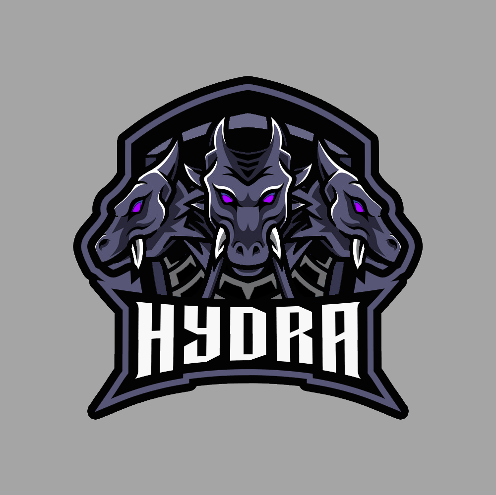

Non sei ancora iscritto alla competizione.Ti sei iscritto con successo!Crea un TeamIscrizioni alla competizione chiuse.Non hai un nr. adeguato di membri per pubblicare una sfida. Invita MembriGioca ora! Crea un Match Invita Membri
Match in Corso!
{{this.matchPending.teamOne.name}} vs
{{this.matchPending.teamTwo.name}}{{this.matchPending.acceptedAt}}Regolamento: {{this.matchPending.rulesetName}}Mappa {{i + 1}}{{map}}VintoPerso
Ricerca match in corso... Cancella
{{userTeam.name}}
{{userTeam.rank}}° Posizione
{{this.matchPending.teamOne.name}} vs
{{this.matchPending.teamTwo.name}}{{this.matchPending.createdAt}}Regolamento: {{this.matchPending.rulesetName}}Mappa {{i + 1}}{{map}}
Entrambi i team devono premunirsi ad effettuare eventuali foto o
video delle mappe giocate: devono essere visibili i player in
partita e il risultato. Ogni disputa dovrà essere documentata,
altrimenti lo staff di 4TP non sarà in grado di prendere una
decisione in merito, dunque la CW potrebbe essere cancellata.
I Leader e Co-Leader di entrambi i team prima di iniziare la CW
devono controllare che i settaggi della lobby siano quelli giusti
come da regolamento. Nel momento in cui la CW è già stata riportata,
lo staff non accetterà nessuna lamentela in merito e quindi
confermerà il risultato.
Il team che hosta, se inserirà i settaggi errati (indicati in rosso
nel regolamento ‘settaggi’), perderà la mappa a tavolino.
Nel caso in cui determinati player non siano presenti nella caserma,
non possono giocare la CW, quindi devono abbandonare immediatamente
la lobby prepartita. Se il match dovesse iniziare e finire, lo staff
riterrà valido il risultato e potrà decidere di prendere
provvedimenti verso i due team.
Nel caso in cui un team si presenti nella lobby prepartita in
inferiorità numerica rispetto agli accordi accettati e visionati
nella sfida, la partita dovrà comunque iniziare, ma mai con meno di
4 player. ESEMPIO: 5v4 sì, mentre 4v3, 5v3 e 4v2 no.
Se durante la mappa in corso un player dovesse crashare, non può
essere sostituito da un altro player che non era presente nella
mappa in corso. Durante l’intermezzo tra una mappa e l'altra si
possono effettuare le sostituzioni dei player, a patto che siano
presenti nella caserma di quel team.
Durante la CW è consentito avere al massimo uno spettatore per team
e deve obbligatoriamente appartenere alla caserma di quel team.
Inoltre, lo spettatore durante la partita dovrà guardare solo il
proprio team; se questo non dovesse accadere si potrà richiedere la
mappa a tavolino.
Se durante la mappa uno o più player dovessero crashare e non
riuscissero più a rientrare a mappa in corso, il team che ha perso
il/i player/s dovrà far stoppare la partita a fine round per far
entrare il/i player/s.
Nel caso in cui l’host della partita dovesse far crashare la lobby
per qualsiasi motivo a round in corso [PRIMA KILL EFFETTUATA]
(disconnessione da internet, errore del gioco ecc.), quel round sarà
assegnato al team avversario. Se l'host dovesse crashare entro
l'inizio del primo round, il round non verrà assegnato vinto a
nessuno; se invece il round è finito e l'host dovesse crashare, non
verranno dati altri round vinti oltre a quello appena concluso.
Se dovesse crashare la connessione a qualsiasi player all'inizio del
primo round (entro la prima kill), l'host deve stoppare la partita,
invitare il player crashato e ripartire con il player in questione .
Se un team non si presenta per lo svolgimento della CW, contattare
un qualsiasi admin, che verificherà effettivamente la loro presenza.
Se il team avversario non fosse presente, perderà il match a
tavolino.
Le CW accettate vanno obbligatoriamente giocate. PROVVEDIMENTO:
perdita a tavolino della CW. 13) I match dovranno essere aleatori e
casuali, difatti è vietato accordarsi con altri team. Se lo staff
dovesse venire a conoscenza di qualsiasi accordo, verranno presi
provvedimenti in merito. PROVVEDIMENTO: ban di entrambi i team per 3
giorni.
Se il team avversario dovesse tardare il regolare svolgimento del
match dopo 15 minuti di attesa, contattare immediatamente un
qualsiasi admin che deciderà in base ai tempi di attesa, se
assegnare o meno la CW a tavolino.
E' fondamentale essere il più rapidi possibili tra una mappa e
l’altra in modo da garantire il corretto svolgimento del match; tra
una mappa e l’altra sono previsti 5 minuti di attesa (non di più).
Le CW devono essere riportate entro 3 ore, per quanto riguarda la
ladder. Mentre le CW devono essere riportate entro 12 ore, per
quanto riguarda i tornei. Nel caso in cui uno dei due team non
dovesse confermare il risultato entro le 3/12 ore (dipende dal tipo
di sfida ladder/torneo), siete pregati di contattare un qualsiasi
admin che provvederà a riportare il risultato di quest’ultima.
Il team che hosta potrà scegliere in quale squadra partire (difesa o
attacco). In genere, preghiamo a tutti di attenersi alla modalità
default: TEAM HOST: DIFESA TEAM SFIDANTE: ATTACCO In caso di
pareggio nelle prime due mappe, la terza mappa dovrà essere hostata
dal team che ha vinto più round durante le mappe precedenti. Nel
caso in cui i round dovessero essere pari, hosterá la terza mappa il
team che ha hostato la prima mappa e il team avversario potrà
scegliere la squadra (difesa o attacco).
Durante la registrazione ad una ladder/torneo, utilizzare un nome
del team inadeguato o inappropriato (parolacce, bestemmie, ecc.)
comporta la cancellazione del team e il ban di quest’ultimo.
PROVVEDIMENTO: cancellazione del team e ban di 3 giorni.
Bisognerà attendere 4 giorni dalla creazione del team prima che si
possa effettuare la cancellazione. La richiesta dovrà essere
effettuata contattando un qualsiasi admin.
Il team si potrà cancellare prima dei 4 giorni obbligatori (regola
21), solo se non ha effettuato nessuna CW.
La lobby di gioco di una CW deve essere chiusa e nessuno può entrare
al dì fuori dei player di quei team che devono giocare. In caso
dovesse entrare un player a caso non appartenente ad uno dei due
team, bisognerà stoppare e ricominciare dall’ultimo risultato,
l’host è tenuto a rifare e chiudere la lobby per evitare ulteriori
disagi.
Se la connessione dell'host non dovesse essere buona e stabile, i
player della squadra avversaria devono suicidarsi e contattare un
qualsiasi admin; la mappa dovrà ricominciare dall’ultimo risultato.
Nessun team è autorizzato a dare o prendersi la vittoria a tavolino
di un match, solo lo staff di 4TP può farlo, se dovesse accadere i
due team verranno penalizzati di 50 punti ELO ciascuno nella ladder
alla quale stanno partecipando.
Un match si potrà cancellare solo se entrambi i team sono d'accordo.
25) É vietato giocare a schermo condiviso.
Se uno o più player usa un accessorio bannato (caricatori aumentati
ecc.), il proprio team perderà la mappa a tavolino.
Nel caso avvenga una contestazione di un match, i leader di entrambi
i team sono obbligati a contattare lo staff entro le successive 24
ore; se questo non dovesse avvenire lo staff provvederà alla
cancellazione del match in questione.
Nel caso una mappa dovesse iniziare in situazione di inferiorità
numerica (4v5) sarà consentito al quinto player del team in
inferiorità numerica di unirsi a mappa in corso, ma dovrà
appartenere alla caserma di quel team ed essere in regola con orario
d’entrata (minimo 2 ore).
Durante una CW contestata se solo uno dei due team contatterà lo
staff fornendo tutte le prove della propria vittoria, entro le 24
ore previste, gli verrà conferita la vittoria.
Se durante una CW uno o più player dovessero usare FMJ, il team
offeso dovrà munirsi di prove concrete (clip) per verificare in
lobby privata che effettivamente non si tratti di un bug del gioco.
Successivamente contattare lo staff che provvederà immediatamente a
bannare il player da tutte le competizioni di 4TP e a dare la CW
vinta al team offeso. PROVVEDIMENTO: ban del player per 7 giorni +
CW a tavolino per il team offeso.
REGOLE PLAYER/TEAM
E' vietato giocare su 4TP con doppi account. PROVVEDIMENTO: ban del
team per 7 giorni, ban del player in questione per 14 giorni e
squalifica da ogni ladder/torneo ufficiale di 4TP.
La descrizione del team non dovrà contenere nessuna
bestemmia/insulto. PROVVEDIMENTO: ban del team per 3 giorni da
qualsiasi competizione di 4TP.
Sono severamente vietati insulti a sfondo razzista/sessista in
competizioni live/streaming. PROVVEDIMENTO: ban del player/team per
3 giorni.
Se un utente è stato bannato, non potrà effettuare CW per tutta la
durata del ban. PROVVEDIMENTO: allungamento dei giorni di ban per
questo utente (da 3 a 5 giorni addizionali).
Se un team farà giocare un utente bannato, il team in questione
verrà bannato. PROVVEDIMENTO: ban del team per 1 giorno.
{{ruleset.name}}
{{ruleset.description}}
Match in corso: {{counterMatchPending}}
{{match.teamOne.name}} vs
{{match.teamTwo.name}}{{match.acceptedAt}}
Match conclusi: {{counterMatchClosed}}
{{match.teamOne.name}}
{{match.teamOne.name}} vs
{{match.teamTwo.name}}
{{match.teamTwo.name}}{{match.acceptedAt}}

Crea Match{{matchNotAccepted.numberOfPlayers}} vs
{{matchNotAccepted.numberOfPlayers}}{{matchNotAccepted.rulesetName}}